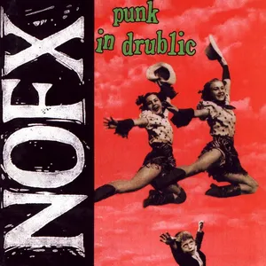
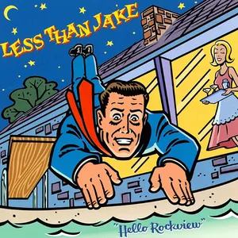

Coverflow Web Component
- 
- 

This web component recreates the famous
“Coverflow”-style
interface, which was popularised by Apple in iTunes. It presents
images in an animated, three-dimensional sideways-scrollable interface.
Clicking the images controls the movement of the carousel.
You can download code from the
coverflow
repository on GitHub.
Web Components
This interface is built using
Web Components
and must be imported before is is rendered.
import './Coverflow.js';
The HTML…
The web component works with any existing list of images. Below
is a simple list before it has been transformed.
Options
To use the coverflow component you must create a <cover-flow>
element wrapped around a list of images. The functionality of the component
can be configured using the following options:
visible="integer"- The number of images visible. Must be more than one.
start="integer"- The starting position of the images. This should start at one.
reflection="boolean"- Whether the reflection should be shown.
endless="boolean"- Whether the items should be looped and create an endless list.
<cover-flow
visible="4"
start="4"
reflection="true"
endless="true"
>
<ul>
</ul>
</cover-flow>
Default
This is the default component, with no options set.
Non-Square
Non-square images can be used, for example movie posters.


Visible Items
In this example, the visible attribute has been set
to 8. This controls how many items are visible at any time.
Start Position
In this example, the start attribute has been set
to 1. This means the interface starts at the first item.
Reflections
When adding the reflection="true" attribute, a
“shiny-floor” reflection is added. This mimics the design that
was implemented in Apple iTunes.
Endless
When adding the endless="true" attribute, an
endless loop of images is created. When reaching the end of the
items, the component loops back to the beginning and vice-versa.